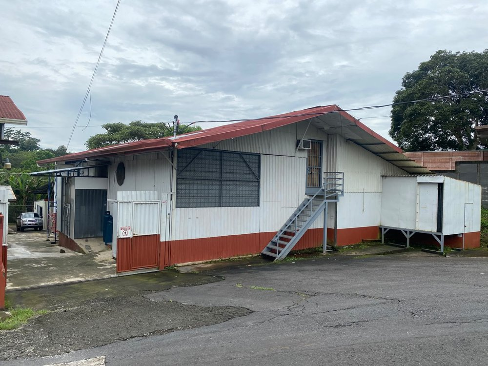

Una empresa joven, con más de 40 años de experiencia
Detrás de cada producto hay un recorrido largo: el de una familia que aprendió el oficio de los embutidos y decidió compartirlo con su comunidad.
Cómo empezamos
Nacimos en el momento más difícil
Especialidades Don Jorge abrió sus puertas en el año 2020, en plena pandemia y en medio de un panorama complicado para cualquier emprendimiento. Lejos de ser un obstáculo, ese contexto reafirmó la decisión: si íbamos a empezar, sería haciendo las cosas bien desde el primer día.
Lo que hoy es una empresa formal se apoya en más de cuatro décadas de experiencia familiar en la elaboración de embutidos. Ese conocimiento acumulado —el punto exacto de la sazón, el manejo cuidadoso de la carne, la paciencia de los procesos— es lo que distingue cada producto que sale de nuestra planta.

Nuestras instalaciones en Santa Gertrudis Sur, Grecia
Misión
Nuestra razón de ser
Elaborar embutidos de la más alta calidad, honrando recetas de origen familiar y llevando a cada mesa costarricense un sabor auténtico, cuidando cada detalle del proceso desde la selección de ingredientes hasta el producto terminado.
Visión
Hacia dónde vamos
Ser reconocidos en la región como sinónimo de calidad artesanal en embutidos, creciendo sin perder el cuidado y la cercanía que caracterizan a una empresa familiar.
Lo que nos define
Los valores detrás de cada producto
Calidad sin atajos
Cada lote se elabora con el mismo estándar, sin importar el tamaño del pedido.
Confianza
Ingredientes que conocemos y procesos que cuidamos, para que usted coma tranquilo.
Espíritu familiar
Somos una familia trabajando: eso se nota en el trato y en el producto.
Sabor de origen
Respetamos la receta original: el sabor que nos identifica no se negocia.